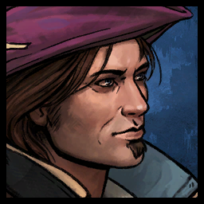
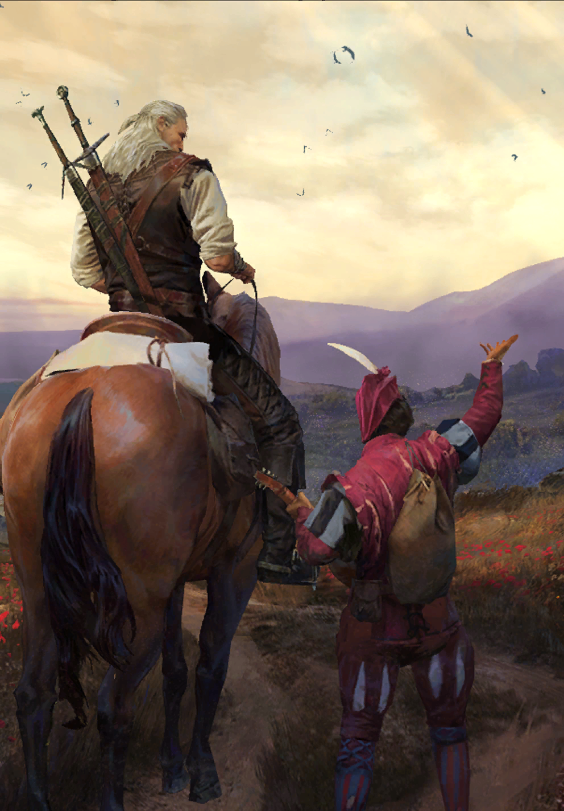
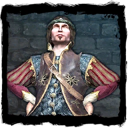

«Заглядывание в бездну считаю идиотизмом. На свете есть множество вещей гораздо более достойных, чтобы их рассматривать».
— Лютик
Юлиан Альфред Панкрац виконт де Леттенхоф более известный как Лютик (ориг. Jaskier) — один из центральных персонажей литературной саги, а также последующей игровой серии, лучший друг и неизменный спутник Геральта, известнейший на весь Север трубадур и поэт.
Содержание
Внешность

{kind=link}
Внешность Лютика мало описывается, хотя не раз упоминается, что он франт и красавчик, причем настолько, что его легко спутать с эльфом – это только служит на пользу его славе и успеху у женщин. У Лютика голубые глаза[3] и светлые волосы, которые он еще в начале своей карьеры отпустил до плеч и стал изящно завивать на железках[4][5] . Бард худощав, предпочитает одеваться в модные блестящие кафтаны или курточки ярких цветов, как правило лиловые, сливовые или цвета красного вина, с рукавами пуфом, кружевными манжетами и жабо, и воротником зубчиками, носит сливового цвета шапочку с эгреткой и белым пером цапли и всегда лютню – неизменный атрибут его профессии. Он никогда не носит оружия, зато в его карманах можно найти расчески и штопор.
«Мне известно, что тебе около сорока, выглядишь ты на тридцать, думаешь, будто тебе немногим больше двадцати, а поступаешь так, якобы тебе всего лишь десять».
— Дийкстра о Лютике, «Кровь эльфов», глава 5
Отсутствие описания внешности Лютика может быть связано с тем, что действие книг разворачивается на протяжении двадцати лет, и ведьмак за это время почти не меняется, в то время как обычный человек бы постарел.
В игровой серии внешность Лютика в принципе соответствует содержащимся в книгах деталям, хотя он и становится шатеном: поэт одевается в модные курточки и кафтаны, становящиеся более яркими, броскими и украшенными с каждой игрой, носит шапочку с пером, иногда – кольца и перстни, и лютню за спиной. У него также голубые глаза, сужающееся к подбородку лицо, темно-русые волосы длиной до середины шеи, эспаньолка и усы
Личностные данные
«Ты циник, свинтус, бабник и лжец. И ничего, поверь, ничего сложного в тебе нет».
— Геральт в разговоре с Лютиком, «Немного жертвенности», глава 4
{kind=link}
Лютик представляет собой полную противоположность Геральта: он почти не может постоять за себя, нагл, но при этом труслив, болтлив и патологически не способен держать язык за зубами, предприимчив, хвастлив, склонен к авантюрам, горделив и тщеславен. Он абсолютно лишен стыда и комплексов, любит быть в центре внимания и не упускает возможностей нажиться на своей славе. Тем не менее он не уступает своему другу в житейской мудрости, красноречии, остроумии, чувстве юмора и зачастую оказывается куда проницательнее и даже терпеливее ведьмака. С Геральтом его также объединяют любвеобилие и страсть к противоположному полу, хотя в отличие от Белого Волка он легкомысленный, ветреный и куда менее деликатен – Лютик постоянно имеет множество несерьезных интрижек одновременно, легко и беззастенчиво изменяет даже тем, кого, по собственным словам, любит, и не стесняется быть на содержании у богатых дам. В связи с этим бард нажил себе множество врагов в лице мужей, отцов и братьев своих многочисленных любовниц.
«Ты, Лютик... как чего скажешь, так неизвестно, плакать ли, смеяться ли или дать тебе под
зад».
— Бернье Хофмайер в разговоре с Лютиком, «Час презрения», глава 2
Несмотря на увеличивающийся по ходу саги возраст, Лютик все время предстает в образе вечного ребёнка, озабоченного лишь сиюминутными радостями и заботами. Он почти всегда весел и в хорошем настроении, никогда не унывает, добр и открыт к окружающим, а говорит первое, что придет ему на ум. Хотя бард и известен как фанфарон и несерьезный человек, Лютик умен, хорошо образован, эрудирован, любознателен и слышит, и замечает гораздо больше, чем кажется. Он умело лавирует между сильными мира сего, предоставляя им сведения, ложь и полуправду за защиту и различные блага. В то же время поэт искренне предан своим друзьям и никогда не переступит через них ради своих интересов, и никогда не подставит их, если только не случайно или по присущей ему глупости. В критических ситуациях он даже может побороть свою трусость и попытаться довольно нелепым и бессмысленным образом пожертвовать собой.
«...Лютик, твой дружок, шалопай, трутень и бездельник, жрец искусства, блистающая звезда баллады и
любовных виршей».
— Нэннеке о Лютике, «Глас рассудка», V
Лютика связывает крепкая дружба с Геральтом, вместе с которым они на протяжении многих лет путешествовали вместе, влекомые общей склонностью к бродяжничеству и издержками профессий. Для стороннего наблюдателя такая связь между ними кажется странной и неестественной, поскольку на виду находится лишь постоянно спасаемый ведьмаком из разных передряг Лютик, в то время как сам Геральт лишь будто бы терпит присутствие надоедливого барда в своей жизни. Тем не менее лишенный каких-либо предрассудков по поводу представителей других рас и мутантов и при этом неглупый Лютик становится чуть ли не первым, кроме других ведьмаков, кто узнает глубокий, впечатлительный и чуткий характер Геральта, понимает его душевные терзания, поддерживает его, может, и не слишком мягко и аккуратно в трудных ситуациях и всегда говорит ему правду, которую сам Белый Волк иногда склонен игнорировать. В то же время Лютик с горечью признает, что часто безвозмездно пользуется отзывчивостью и благородством Геральта, и не осознает, и не ценит собственного вклада в их дружбу.
«— Лютик! Не спи в седле!
— А я и не сплю. Я творчески мыслю».
— «Башня ласточки», глава 3
Творчество
«Я его знаю. Это не может быть рифмованная речь, ибо он не богохульствует, не бормочет себе под нос и не
подсчитывает количество слогов на пальцах. Он пишет в тишине, и, стало быть, это — проза».
— Геральт о процессе сочинения, «Башня ласточки», глава
Лютик – настоящий человек искусства, талантливый и признанный бард и певец, обладающий хорошо поставленным, звучным тенором, который при сильном испуге может достигать невероятных высот. Он также является автором множества известных песен, стихотворений и баллад, в том числе сборников поэзии «Невзгоды любви» и «Час Луны», а также мемуаров «Полвека поэзии». В игре «Ведьмак» Лютику приписывается авторство ещё одной книги — «Баллады». Ради своего творчества он предпочитает путешествовать по Северным королевствам, собирать сюжеты, сочинять свои авторские песни и исполнять их под аккомпанемент лютни, взимая со слушателей небольшую добровольную плату за свой труд, либо же квартируясь при дворе местного сюзерена, либо же просто зажиточного и готового содержать его хозяина.
До событий саги
Неизвестно, в каком году родился Лютик: в литературной саге дата не называется, а в игровой серии в разных источниках его авторства говорится как о 1229[1], так и 1232[2] годах – вероятно, это вызвано сознательным искажением фактов самим поэтом, чтобы казаться моложе своих лет [6][7]. Будучи дворянином по рождению, сыном некого барона де Леттенхофа, молодой виконт Юлиан Альфред Панкрац был в результате неких причин лишён наследства. Неизвестно, в какой части Северных королевств находились вотчины де Леттенхофов, однако судя по тому, что Феррант де Леттенхоф служит в Кераке, возможно, они являются вассалами этого королевства или ближайших к нему соседей.
Должность преподавателя ему предложили, когда он, блестяще сдав последний экзамен, заставил
профессоров
онеметь, поскольку за время занятий снискал репутацию лентяя, гуляки и идиота.
«Кровь эльфов», глава 5
Поступив в Оксенфуртский Университет на Кафедру Труверства и Поэзии, он закончил бакалавриат с отличием, год преподавал в своей alma mater, после чего отправился в странствия по Северным королевствам под псевдонимом Лютик, влекомый потребностью собирать сюжеты, сочинять и петь, лишь изредко возвращаясь в Академию как приглашенный лектор.
Участие в литературной саге
«Край света»
{kind=link}
Недавно познакомившись с Геральтом на гуляньях в Гулете в Аэдирне, Лютик, спасаясь от братьев своей недавней любовницы, пристает к ведьмаку, и они вместе отправляются в Долину Цветов, на краю света у Синих гор. В одной из деревень Геральту предлагают заказ на дьявола, однако при условии, что он прогонит бестию, а не убьет. Отправившись на поля, Геральт и Лютик встречают дьявола, который оказывается разумным, однако бард провоцирует его насмешками, и герои вынуждены спасаться бегством.
Возвратившись к местному солтысу за объяснениями, Геральт выясняет, что дьявола уже пытались прогнать, действуя по советам местной вещуньи, Лилле. Сильван же, в основном, занимается тем, что крадет зерно из амбаров. Возвратившись на поля, Геральт сначала мирно, а затем силой пытается заставить дьявола уйти, однако в пылу потасовки его сбивает с ног лошадь, и он теряет сознание. Очнувшись связанный вместе с Лютиком, ведьмак понимает, что сильван по имени Торкве крадет зерно и подсматривает секреты ведения сельского хозяйства для эльфов, которые в этот момент обсуждают с дьяволом условия сделки. Эльфка-мизантроп Торувьель разбивает лютню Лютика о дерево, от дальнейшей расправы ведьмака и барда ненадолго спасает предводитель эльфов Филавандрель. Он вступает с Геральтом в дискуссию о возможности сосуществования эльфов и людей и в конце концов решает убить их с Лютиком как нежелательных свидетелей, Торкве же встает на их защиту. Бард пытается предложить эльфам выкуп, в том числе и пищей, говоря, что ему помогут друзья, однако ведьмак прерывает его, справедливо утверждая, что пресмыкаться и клянчить бессмысленно. Внезапно появляется Лилле в образе Королевы Полей, очень почитаемой эльфами, телепатически беседует с Филавандрелем и, несмотря на его уговоры и мольбы пойти с ними, богиня остается в селении людей. Торкве развязывает пленников, Торувьель дарит Лютику новый драгоценный инструмент, с которым бард впредь не расстается, взамен уничтоженного, после чего эльфы уходят обратно в горы.
Эльфка кивнула, сняла с луки седла лютню, прекрасный инструмент из легкого, искусно
инкрустированного
дерева с изящным, резным грифом и молча вручила Лютику. Поэт принял инструмент, поклонился. Тоже
молча, но его глаза говорили о многом.
— «Край света», 6
«Последнее желание»
Во время рыбалки Геральта и Лютика близ реданского города Ринда бард неожиданно вытаскивает из воды кувшин. Считая, что он вправе загадать три желания, Лютик требует подчинения от заточённого внутри него джинна, но сталкивается с его яростью – тот наносит поэту магическую травму шеи.
« – Во-первых, пусть как можно скорее удар хватит Вальдо Маркса, трубадура из Цидариса. Во-вторых, в
Каэльфе проживает графская дочка Виргиния, которая никому не желает давать. Пусть мне даст.
В-третьих...
— «Последнее желание», 1
Каково было третье желание Лютика, никому узнать не дано».
Геральту удаётся прогнать чудовище неким экзорцизмом с не совсем известными ему свойствами. Ведьмак везёт раненного поэта, рискующего потерять возможность петь, в город, однако оказывается, что его ворота закрыты на ночь, из-за чего им приходится ночевать в сторожевой башне за стенами, вместе с некоторыми стражниками. Они дают Геральту совет обратиться за помощью к чародейке Йеннифер, которая в этот момент находится в Ринде. На следующее утро ведьмак просит магичку о помощи, она соглашается и исцеляет Лютика, однако завладевает разумом Геральта и получает над ним полный контроль.
Ведьмак оказывается в остроге, куда его посадили за избиение городских заправил, которые ранее требовали изгнания Йеннифер. Подкупленный одним из них стражник избивает Геральта, однако, когда Белый Волк желает, чтобы он лопнул, именно это и происходит. Городской ипат вызывает ведьмака к себе, чтобы выяснить, что происходит, здесь же присутствует жрец Крепп. В этот момент джинн вступает в противоборство с чародейкой, при этом он принимается разрушать город. Из портала на стене появляется Лютик, который желает, чтобы Геральт был не виновен в своих преступлениях против города – он заявляет, что от него этого потребовала Йеннифер. Несмотря на все 3 желания, высказанные поэтом, чародейка не может обуздать силу джинна, чтобы использовать её в будущем. Геральт понимает, что у нее не выходит, поскольку истинный «хозяин» монстра – сам ведьмак, загадал лишь 2 желания: экзорцизм, который примерно переводился как «пойди и отымей себя», и лопнувшего стражника. По просьбе ведьмака Крепп телепортирует его к Йеннифер, которая не очень рада видеть Геральта, тот же спасает их обоих и целый город, загадывая свое последнее желание — чтобы судьбы ведьмака и чародейки были навсегда связаны, после чего джинн исчезает. Йеннифер и Геральт влюбляются друг в друга.
По мотивам этих событий Лютик впоследствии сочиняет одну из самых своих популярных баллад.
«Сезон гроз»

Лютик, гвинт
Лютик снова встречает Геральта более чем через год в Кераке, когда ведьмак лишается своих знаменитых мечей, которые оказываются украдены. Глава тайной полиции Керрака Феррант де Леттенхоф, являющийся двоюродным братом Лютика, обещает ведьмаку помощь в поисках. В погоне за своими мечами, которые, по слухам, вскоре будут проданы в Новиграде на аукционе в Доме Борсоди, и выполняя просьбу своей нынешней любовницы Литты Нейд, Геральт отпраляется в замок Риссберг, центр исследований чародеев, для помощи им в одном деле. Лютик достает ведьмаку меч из Вироледо, и тот отбывает в Темерию. Бард же остается в окрестностях Керака и завязывает роман с адвокатессой, ранее оказывавшей юридические услуги Белому Волку.
Геральт расследует массовую гибель крестьян в окрестностях замка, якобы убитых призванным неким чародеем демоном. Он выясняет, что убийства совершались подручными Сореля Дегерлунда – бездарного мага, не способного на такой уровень знаний, но не успевает открыто сообщить об этом коллегии чародеев Риссберга, поскольку в результате случайной телепортации оказывается в дельте Понтара. Впоследствии, когда ведьмака, угрожая убийством кметов, берут в плен реданские наемники, купленный Лютиком меч, оказавшись подделкой, ломается во время тренировочного спаринга. Не сумев добраться вовремя до Новиграда, Геральт не застает аукцион, и его мечи оказываются проданы, при этом покупателей ему сообщить отказываются.
Геральт возвращается в Керак, где встречает дружественного ему чародея из Риссберга по прозвищу Пинети, который рассказывает, что в центре теперь командует Сорель, а он сам был «уволен». Маг на прощанье дарит Геральту свой фамильный клинок, являющийся настоящим мечом из Вироледо, и сообщает местоположение Дегерлунда, ведьмак же возвращается в Риссберг и расправляется с психопатом.
Прибыв обратно в Керак, Геральт становится свидетелем государственного переворота и убийства короля Белогуна, после чего он переживает цунами, накрывшее город, окончательно ссорится с Литтой Нейд, теряет меч, подаренный Пинети, и вместе с Лютиком навсегда покидает Керак. Путешествуя по Темерии, Геральт и Лютик на одном из постоялых дворов сталкиваются с ведьмаком из Школы Кота Брэеном по прозвищу Кот из Йелло, который вызывает Геральта на поединок, ошибочно считая, что тот держит путь в Вызиму для выполнения заказа короля Фольтеста на стрыгу. С огромным трудом Геральту удается не допустить кровопролития, в том числе потому, что незнакомка, представившаяся как Тициана Фреви, дает Белому Волку сверток с его мечами. После того, как Кот из Йелло уходит, Тициана рассказывает, что мечи ей передала Йеннифер, которая и купила их на аукционе. Лютик утверждает, что Коты являются дефектными ведьмаками, чьи мутации прошли не совсем правильно и вызвали у них неустойчивость психики и садистские наклонности, но Геральт прерывает его, приказывая не болтать.
Впоследствии Геральт и Лютик разделяются.
«Глас рассудка»
Спустя некоторое время раненный после поединка со стрыгой Геральт лечится и приходит в форму в храме богини Мелитэле в Элландере. Услышав о ранении Белого Волка, в храм прибывает Лютик, которому, распутнику в женском монастыре, не слишком рада настоятельница Нэннеке. Вместе с другом ведьмак распивает бутыль самогона и жалуется ему на свою судьбу ведьмака, на что Лютик рассказывает Геральту об исчезнувшей профессии ловцов единорогов, представительницы которой были поголовно девственницами. Он также упоминает свою учебу в Оксенфуртской академии.
«– ... Когда учился в Оксенфуртской академии, история занимала второе место в списке моих любимых
предметов.
– А первое?
– География, – серьезно сказал поэт. – Атлас мира был большой, и за ним легче было скрыть пузырь с
водкой».
— «Глас рассудка», V
Покинув ненадолго храм, Геральт и Лютик сталкиваются с рыцарями Ордена Пылающей Розы, Тайлесом и Фальвиком, ранее требовавшими выдворения ведьмака из храма, и первого из которых ведьмак умудрился оскорбить. Приведя с собой эскорт из пикинеров под командой краснолюда Денниса Кранмера — капитана стражи князя Элландера. Рыцари требуют дуэли, причем под условием, что Геральт не может коснуться Тайлеса своим клинком, иначе в бой вступит отряд Кранмера. Белый Волк, убедившись в честности и порядочности Кранмера и в том, что Лютику ничего не угрожает, соглашается на бой и в ходе поединка ловким финтом делает так, что меч Тайлеса бьет его же самого в лицо, оставляя не смертельную рану. Фальвик приказывает солдатам напасть, однако Деннис отзывает их, говоря, что все честно: Геральт не нанес рыцарю удара — Тайлес «неудачно» столкнулся с собственной сталью. После этого ведьмак и бард ненадолго возвращаются в храм, после чего снова отбывают в путь.
«Предел возможного»
«Вечный огонь»
После очередного расставания с Йеннифер Геральт посещает Новиград для закупки нового снаряжения, где встречает Лютика, который критично отзывается о его вкусе в одежде. Тот оказывается вышвырнут от очередной любовницы Веспулы, еле успев спасти свою выброшенную из окна лютню от гибели на брусчатке улицы. Друзья отправляются в местный кабак на обед, но трактирщик отказывается давать и без того задолжавшему Лютику и вечно безденежному Геральту в долг, однако предприимчивый и наглый поэт решает потрапезничать за счет знакомого купца низушека Даинти Бибервельта, ведущего себя странно. Вскоре в эркер к компании врывается еще один низушек, как две капли воды похожий на Даинти, завязывается потасовка, в ходе которой ведьмак, признав в первом низушеке допплера, сковывает его серебряной цепью. Настоящий Даинти рассказывает историю о его ограблении, совершенном двойником, в этот момент в таверну заходят посетители, и допплер, ранее представившийся как Дуду, убегает. Даинти поздравляет с огромной прибылью его знакомый купец, что подтверждает краснолюд-банкир Вимме Вивальди – в результате последних сделок низушек богат. В этот момент входит посыльный и говорит, что купец Бибервельт просит прислать на западный базар 30 крон. Компания отправляется за Дуду, ведьмак преследует принявшего облик Лютика допплера, однако его оглушает сковородой все еще злая Веспула, перепутав с настоящим бардом. Впечатлённый коммерческим талантом допплера, Даинти признает Дуду своим троюродным братом и назначает своим представителем в Новиграде. Вся компания отправляется праздновать успех и воссоединение Бибервельтов в «Пассифлору».
«Немного жертвенности»

Геральт, Эсси и Лютик, рисунок steamey
Геральт с Лютиком находятся в Бремервоорде, где ведьмак выполняет для местного князя Агловаля работу переводчика, поскольку тот намерен объясниться в любви сирене Шъееназ. Сирена, несмотря на свою любовь к Агловалю и вопреки просьбам князя, отказывается выйти на сушу и жить с ним. Разозленный князь не платит Геральту, которого считает причиной своей неудачи.
Геральт и Лютик, полностью без денег, отчаянно ищут какой-нибудь заработок, и вскоре поэту предлагают выступать на свадьбе. Не имея другого выхода и обещав другу отбросить гордость, Лютик соглашается и узнает, что кроме него на празднестве будет выступать его знакомая поэтесса Эсси Давен. Свадьбу посещает Агловаль и рассказывает ведьмаку о таинственной смерти рыбаков и ныряльщиков за жемчугом близ Драконьих Клыков, предлагая работу. Геральт, также связанный обещанием барду, соглашается и на следующий день расспрашивает Шъееназ о смерти людей, на что она с ужасом отвечает, что ведьмак должен прекратить это расследование. Параллельно развивается романтическая линия ведьмака и Эсси. Геральт и Лютик во время отлива отправляются на место, где были убиты ныряльщики и находят ступени в легендарный подводный город Ис, после чего на них нападают рыболюди. С трудом отбившись от них, раненный Геральт отправляется к князю, чтобы сообщить, что у Драконьих Клыков нельзя промышлять рыболовством, и Агловаль с большой неохотой соглашается с ним. После этого появляется Шъееназ, которая обменяла свой хвост на прелестные ножки, и соглашается быть с князем. Геральт, Лютик и Эсси немного попутешествовав вместе, отправляются каждый своей дорогой. Перед этим ведьмак и поэтесса решают, что они все-таки не могут быть вместе. Упоминается, что несколько лет спустя Эсси умирает от оспы в Вызиме, а Лютик, не страшась болезни, хоронит ее тело.
«Нечто большее»
«Кровь эльфов»
«Час презрения»
«Крещение огнём»
«Башня ласточки»
«Владычица озера»
Игра «Ведьмак»
Глава II
{kind=link}
Лютик рассказывает историю о ведьмаке
Лютику удалось проскочить через карантин в Вызиме, и он снова смог вернуться в свою квартиру. Давно знакомая с бардом Шани пригласила того на вечеринку,где был его старый друг Геральт из Ривии, ведьмак. Лютик, конечно же, был неописуемо рад и удивлён тому,что его лучший друг жив, хоть и потерял память. Вместе с Геральтом они отлично отдохнули и вспомнилибылое. В ходе этих событий, как оказалось, Лютик продолжал шпионить, но в этот раз отчитывался перед Радовидом.
Глава III
Потеряв свою лютню, Лютик заливает свое горе в «Новом Наракорте». Благодаря Геральту бард снова вернул свою реликвию и продолжил давать концерты в таверне.
Глава IV
Чародейка Трисс Меригольд отправила Лютика вслед за Геральтом в Темноводье, где они снова встретились.
Получив заказ, Геральт из Ривии просит барда помочь ему. Лютик неохотно соглашается на весьма необычную просьбу ведьмака — исполнить балладу для призрака Алины.
Когда на деревню внезапно нападают рыцари Ордена Пылающей Розы, Лютик и остальные жители Темноводья оказываются в плену у скоя'таэлей. Геральт вынужден спасти барда, после чего они вместе сбегают в Вызиму.
Глава V
Геральт и Лютик проплывают через густой смог, и выясняется, что Вызима — столица Темерии — в огне. Ведьмак решает не подвергать поэта опасности, поэтому оставляет его в лагере короля Редании Радовида, а также может передать ему на хранение часть своих вещей.
Эпилог
Геральт вновь встречает Лютика в Обители Ордена после победы над Яковом. Бард обсуждает с другом дальнейшие шаги, проделанный путь и двемеритовый медальон Альвина, найденный на теле Магистра.
Запись в дневнике
{kind=link}
- Ходят слухи, что знаменитый менестрель Лютик посещал Предместья.
- Я встретил Лютика, который, вроде бы, должен быть моим лучшим другом. Лютик — безусловно болтун, шут гороховый и лентяй. Он к тому же бабник с удивительным талантом вляпываться в неприятности. Но при этом Лютик — действительно талантлив, хоть и зарабатывает на жизнь случайными представлениями.
- Лютик попал в беду, и мне пришлось ему помогать. Всё, что я слышал раньше, оказалось правдой.
Связанные квесты
|
|
Дополнение «Побочные эффекты»
Лютик рассказывает о том, как в очередной раз попал в беду. На это раз в тюрьму из-за своих любовных похождений. Так как у Лютика было другое мнение о соответствующем для него наказании, он попросил стражу защитить его. Но на самом деле ночные приключения Лютика — это ненастоящая причина его страха за свою жизнь. К сожалению, он вляпался в грязные дела с местным криминальным боссом и сейчас должен за это расплатиться. Геральту предстоит выручить старого друга. После расплаты с долгом ведьмак и бард сходив баню, надолго покидают Вызиму.
Дополнение «Цена нейтралитета»
Лютик является исполнителем баллады о событиях в Каэр Морхене.
Игра «Ведьмак 2: Убийцы Королей»
Игра «Ведьмак 3: Дикая Охота»
Игра «Кровная вражда»
Игра «Гвинт: Ведьмак Карточная Игра»
Фильм и сериал
Сериал «Ведьмак» (Netflix)
Дополнительно
Галерея
Примечания
- ↑Глоссарий игры Ведьмак 3: Дикая Охота.
- ↑Книга «Последнее желание» за авторством самого Лютика.
- ↑«Предел возможного», 3.
- ↑«Крещение огнём», глава 2.
- ↑«Сезон Гроз», глава 4.
- ↑Оба этих года не могут быть настоящей датой рождения Лютика, поскольку события книги «Сезон Гроз» развиваются в 1245 году.
- ↑В сериале от Netflix годом его рождения является 1222, который под хронологию «Сезона Гроз» подходит.